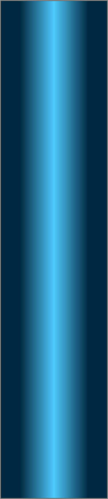
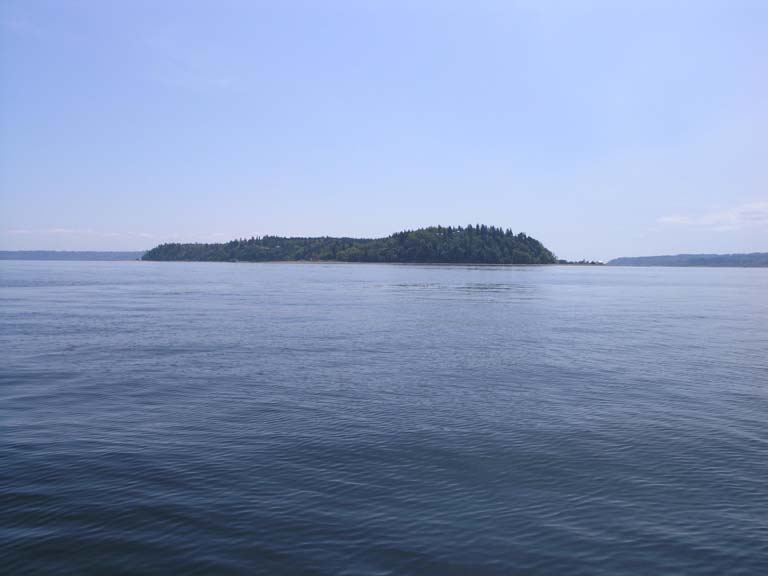
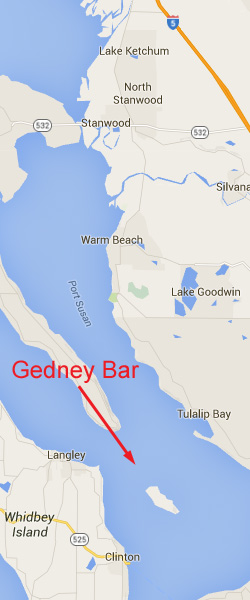
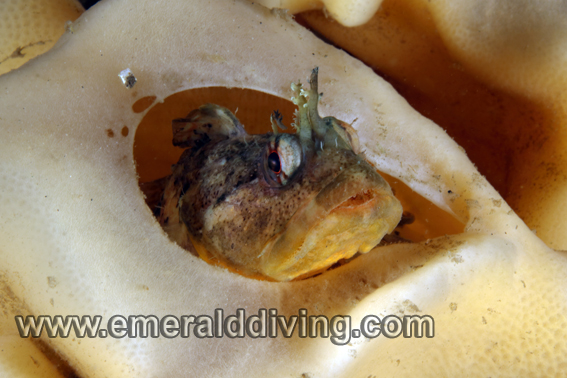
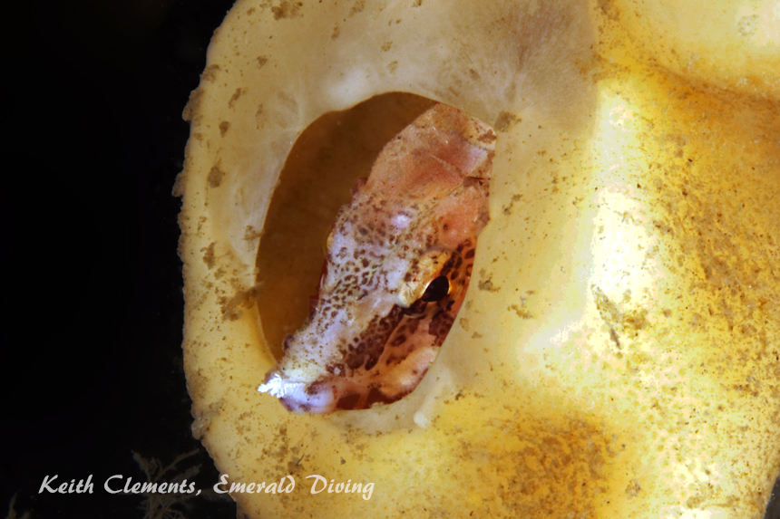
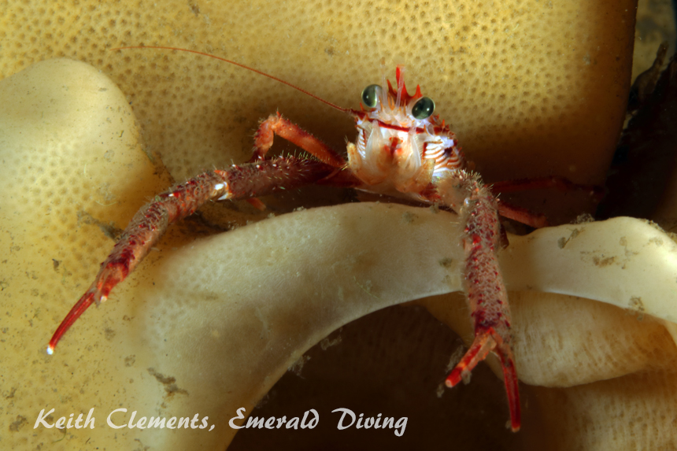
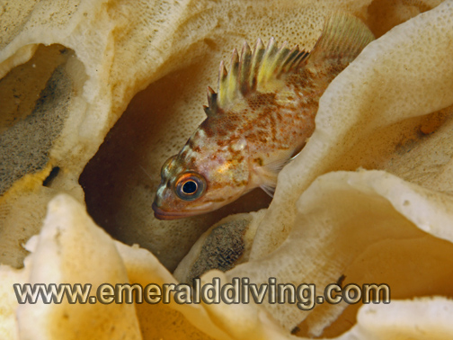
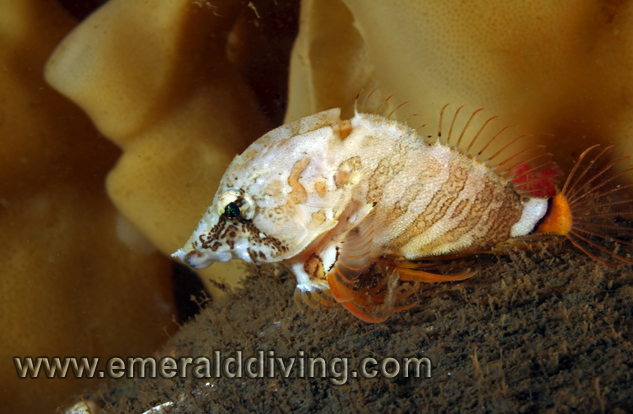
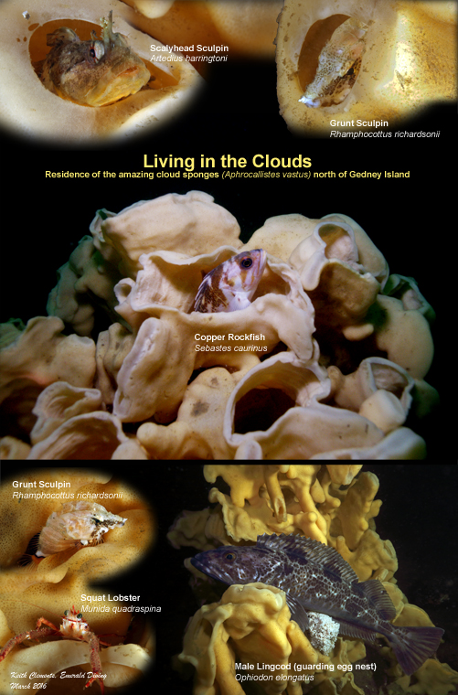

Gedney Bar
Topography: Flat and sandy substrate smattered with a occasional small rocks.
Puget Sound marine life rating: 4
Puget Sound structure rating: 1
Diving depth: 80-90 feet.
Highlight: Field of small and moderately sized healthy cloud sponges, and the inhabitants of those sponges.
Skill level: Advanced
GPS coordinates: N48° 02.506’ W122° 20.324’
Access by boat: Gedney Bar is a sand bar situated between Gedney lsland and the south tip of Camano Island. The depth to the east and west of this bar drops off substantially, however the top of this expansive bar is flat. This site is literally out in the middle of nowhere. I anchor at the GPS coordinates listed.
Shore access: None
Dive profile: I only dive this site when the seas are calm due to the exposure of this location. I want to make certain the boat operator can easily spot my signal maker buoy as I perform a free ascent and pick me up in case I can’t make it back to the boat.
I anchor at the GPS coordinates and descend the anchor line to the substrate about 85 feet below. I follow a heading between 270-300º to find the sponge fields. I usually encounter cloud sponges 50-75 yards from the anchor. I purposely do not anchor closer to the sponges to avoid the risk of damaging them with the anchor. The substrate around the anchorage is flat and sandy. I know I am getting close to the cloud sponges when I see the occasional rock, often topped by a giant plumose anemone. The rocks in this field are not huge and often spread out. The field is not very big - maybe 75 feet in diameter. The cloud sponges have established residence in this field. The depth is fairly homogeneous throughout the field. The substrate starts to drop off north of the field and a moderate pace.
Before I run low on no-deco time or air supply, I head the reverse course back towards the boat. I occasionally re-establish the anchor line, but more often end up performing a free ascent from about 85 feet. I shoot a signal marker buoy when I begin my free ascent to ward off traffic and allow the boat operator to track my drift.
Thanks to crazy man Rob Holman for accidentally finding these cloud sponges during his relentless pursuit of halibut.
My preferred gas mix: EAN 36
Current observations:
Current Station: Admiralty Inlet
Slack Corrections: +45 minutes
I dive this site on any size exchange, but do so at slack. I have noted mild to moderate cross-current sweeping over the bar on occasion, but I have not had difficulty swimming against it. I plan my ascent in accordance with the direction of the current. If the current is headed back to the boat, I start my ascent early as I know I will drift somewhat during my free ascent and five minute safety stop. A strong wind results in surface current as this area is very exposed. I do not dive this site when the wind is blowing.
Boat Launch:
Mukilteo State Park boat ramp. Approximately 6 miles from the dive site. Note that the docks are pulled from this facility during the off-season.
Facilities: None
Hazards:
Offshore location. The nearest land is about a mile away. There is no nearby shore to swim to in case of emergency.
Exposure: This site is wide open to wind and weather from any direction. Surface conditions can rapidly deteriorate.
Free ascent: A free ascent from 85 feet is likely as it is difficult to re-establish the anchor line at the end of the dive.
Boat traffic: Moderate boat traffic crosses this expansive bar. The Port of Everett is just to the east. Current: Mild to moderate current is usually present on the bar.
Marine life: This is the only place in Washington I know where healthy cloud sponges are accessible within recreational limits. None of the sponges are of are of legendary “Volkswagen” proportions, but about half a dozen are over three feet in diameter. Look for squat lobsters hiding in the folds of the cloud sponges.
A surprising number of species frequent this bar and are found in the area. Colorful vermilion, quillback, and copper rockfish hunker down near isolated rocks or next to sponges. Giant plumose anemones establish a foothold anywhere there is solid structure. Striped nudibranchs, seapens, pink nudibranchs, sand rose anemones, and giant nudibranchs are all possible encounters on this sandy bar. Some of the local tube-dwelling anemones are a fantastic purple color. Gorgeous crimson anemones dot sections of the grey substrate with fluorescent pink.





Scalyhead Sculpin
Lingcod on eggs
Grunt Sculpin
Decorated Warbonnet
Underwater imagery from this site

Giant Nudibranch

Squat Lobster

Copper Rockfish
Grunt Sculpin
Copper Rockfish
Composite Photography From Gedney Bar
